Panduan Pengguna
Panduan lengkap untuk menggunakan Family Budget Tracker dari awal hingga mahir.
Mulai Pertama Kali
Langkah-langkah awal untuk setup aplikasi dan mulai mencatat keuangan keluarga.
Setelah install, buka aplikasi. Kamu akan melihat halaman splash, lalu tap tombol "Masuk dengan Google". Pilih akun Google yang ingin dipakai.
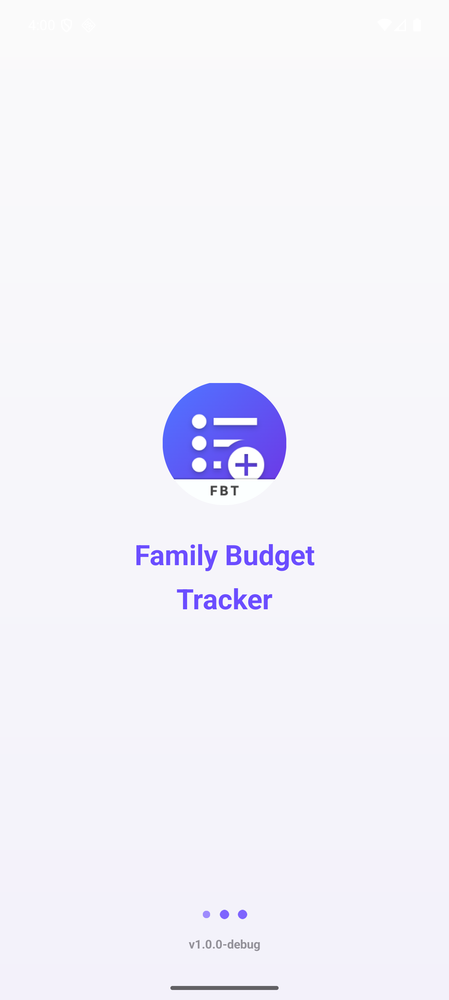
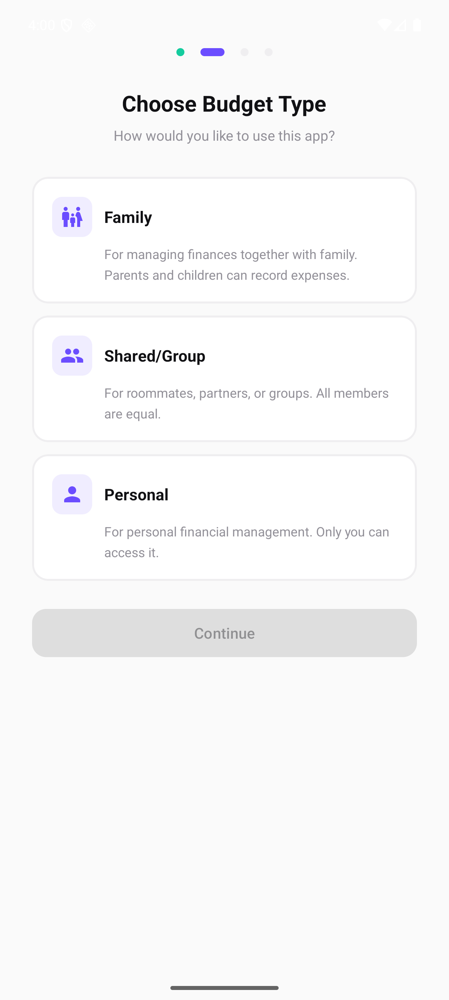
Selanjutnya, pilih tipe budget yang sesuai dengan kebutuhanmu:
Keluarga
Untuk suami, istri, dan anak. Ada hierarki Parent (kontrol penuh) dan Child (akses terbatas).
Hierarki Parent-ChildSaya Sendiri
Budget personal untuk kamu sendiri. Hanya 1 pengguna, tanpa perlu invite siapapun.
Single UserBersama Teman
Untuk teman kos, roommate, atau rekan. Semua anggota setara — tidak ada hierarki.
Semua Setara• Keluarga — kamu orang tua yang ingin mengontrol budget keluarga, bisa lihat pengeluaran anak.
• Saya Sendiri — hanya untuk mencatat keuangan pribadi, tidak butuh anggota lain.
• Bersama Teman — split budget kos/kontrakan, belanja bareng teman, atau proyek bersama.
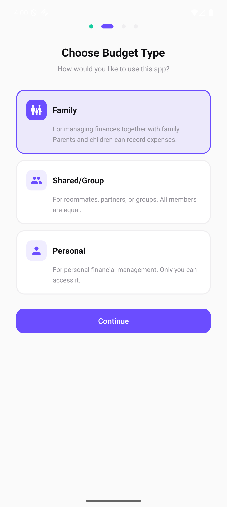
Kamu punya 2 pilihan:
Buat Budget Baru — Jika kamu yang pertama kali membuat budget. Aplikasi akan otomatis membuat Google Spreadsheet baru di Google Drive kamu.
Gabung Budget — Jika ada anggota keluarga/teman yang sudah membuat budget dan mengundangmu. Pilih spreadsheet yang sudah di-share ke email kamu.
Setelah spreadsheet siap, pilih role (peran) kamu:
Tipe Keluarga: Pilih salah satu dari 3 role Parent yang tersedia.
👨 Suami / 👩 Istri / 👤 Orang Tua Tunggal (Parent):
Akses penuh — kelola budget, invite & hapus anggota, lihat & export transaksi semua anggota, kelola kategori & metode pembayaran.
👶 Child (Anak):
Akses terbatas — catat transaksi sendiri, lihat laporan & leaderboard. Tidak bisa invite/hapus anggota, export hanya data sendiri. Role ini ditambahkan oleh Parent saat invite anggota baru.
Tipe Bersama Teman: Anggota 1, Anggota 2, dst.
👥 Peer (Semua Anggota):
Akses penuh & setara — semua anggota bisa kelola budget, invite & hapus anggota, lihat & export semua data. Tidak ada hierarki.
Tipe Saya Sendiri: Otomatis — role "Personal" langsung terpilih.
👤 Personal:
Akses penuh otomatis — semua fitur tersedia untuk kamu sendiri. Tidak perlu pilih role, langsung masuk.
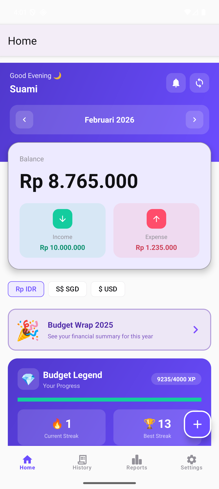
Mengenal Home
Setelah setup selesai, kamu akan masuk ke halaman Home. Ini adalah pusat kendali keuanganmu.
Di bagian atas Home, kamu bisa melihat:
• Saldo — Total pemasukan dikurangi pengeluaran bulan ini.
• Ringkasan Bulanan — Total pemasukan dan pengeluaran dalam bentuk card.
• Greeting — Sapaan berdasarkan waktu (Selamat Pagi/Siang/Sore/Malam) dan nama role kamu di bawahnya.

Scroll ke bawah untuk melihat 7 transaksi terakhir. Setiap transaksi menampilkan kategori, nominal, tanggal, dan siapa yang mencatat.
Tap salah satu transaksi untuk melihat detail atau mengeditnya.
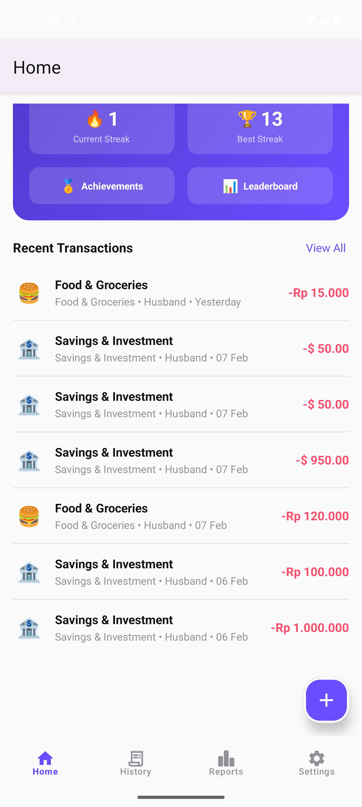
Di bagian bawah layar ada Bottom Navigation dengan 4 menu:
• Home — Dashboard utama (halaman ini).
• History — Semua riwayat transaksi.
• Reports — Laporan dan grafik keuangan.
• Settings — Pengaturan aplikasi.
Di Home juga ada quick action buttons: Achievements (piala), Leaderboard (ranking), dan Pending (notifikasi tertunda).
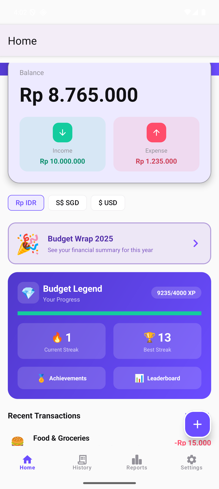
Catat Transaksi
Cara mencatat pengeluaran dan pemasukan secara manual.
Dari Home, tap tombol (+) berwarna ungu di tengah bawah layar. Ini akan membuka form tambah transaksi.
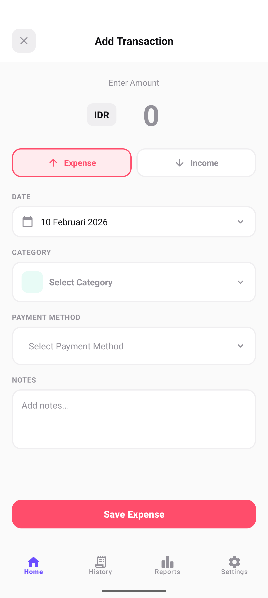
Di bagian atas form, ada 2 tab:
• Pengeluaran — untuk mencatat uang keluar (belanja, bayar tagihan, dll).
• Pemasukan — untuk mencatat uang masuk (gaji, bonus, transfer masuk, dll).
Pilih tab yang sesuai, lalu isi nominalnya.

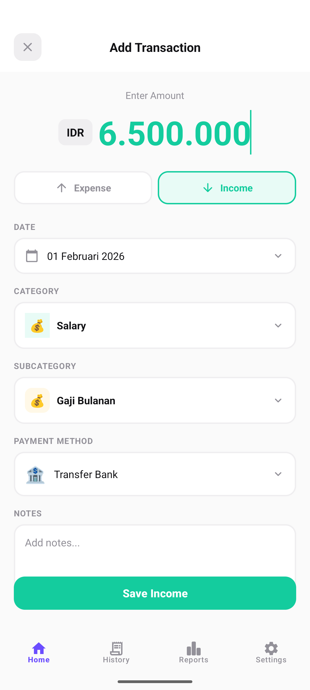
Tap field "Kategori" untuk memilih kategori transaksi. Contoh kategori pengeluaran: Makanan, Transportasi, Tagihan, Belanja, dll.
Setelah memilih kategori, kamu bisa pilih sub-kategori (opsional) untuk detail lebih spesifik. Misalnya kategori "Makanan" bisa dipilih sub: Belanja Bulanan, Jajan, Makan di Luar, dll.
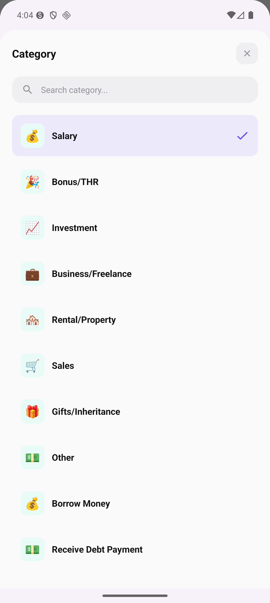
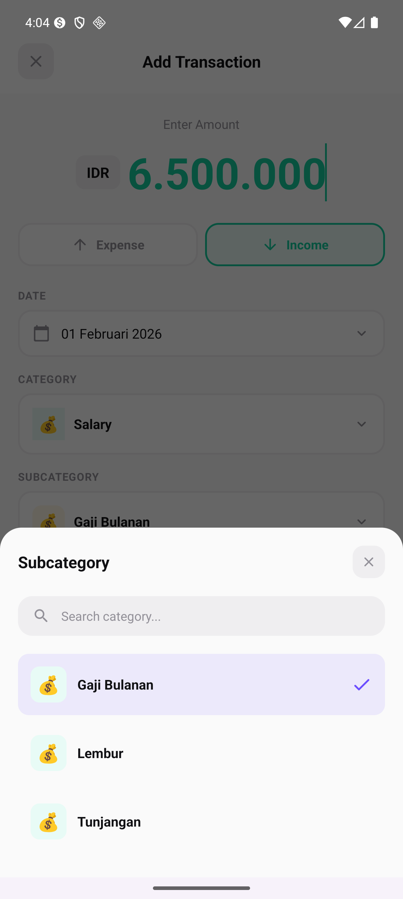
Tap field "Metode Pembayaran" untuk memilih cara bayar: Cash, BCA, GoPay, OVO, DANA, dan lainnya. Ini membantu kamu melacak dari mana uang keluar/masuk.
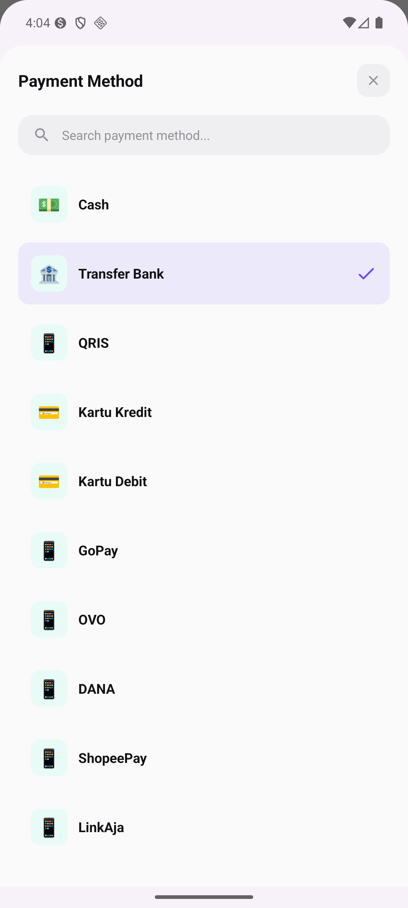
Secara default, tanggal transaksi adalah hari ini. Jika ingin mencatat transaksi di tanggal lain (misalnya kemarin atau minggu lalu), tap field "Tanggal" untuk membuka date picker.
Pilih tanggal yang sesuai, lalu tap "OK". Ini berguna jika kamu lupa mencatat transaksi di hari sebelumnya.
Di sebelah field nominal, ada badge mata uang (misal: IDR). Tap badge ini untuk mengganti currency jika transaksi menggunakan mata uang lain seperti USD, SGD, EUR, dan lainnya.
Mata uang default diambil dari pengaturan kamu. Setiap transaksi bisa menggunakan currency berbeda — berguna jika kamu punya pengeluaran dalam beberapa mata uang.
Kamu juga bisa menambahkan catatan (opsional) untuk keterangan tambahan, misalnya "Belanja bulanan di Alfamart".
Setelah semua terisi, tap tombol "Simpan". Transaksi akan tercatat dan kamu kembali ke Home.
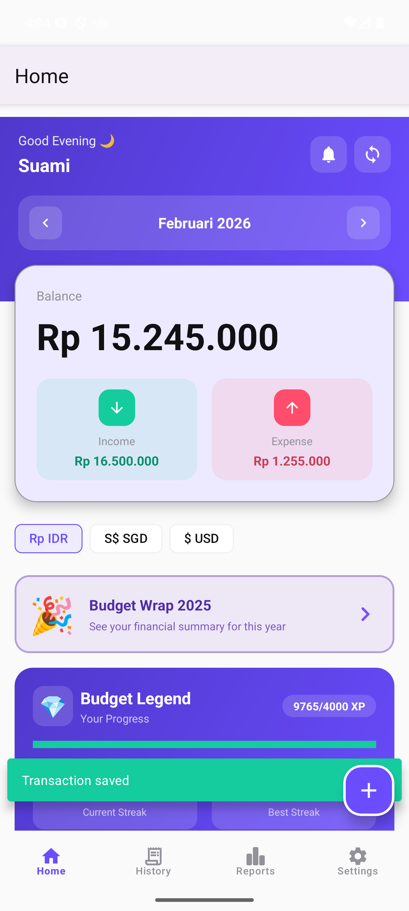
Fitur ini khusus untuk mode Keluarga. Gunakan untuk mencatat transfer uang antar anggota keluarga, misalnya suami memberi uang belanja ke istri.
Cara pakai:
• Buka form tambah transaksi, pilih tab Pengeluaran.
• Pilih kategori "Transfer Internal" (ikon 🔄).
• Pilih sub-kategori = nama anggota tujuan (misal: "Istri"). Nama kamu sendiri tidak akan muncul di daftar.
• Isi nominal dan simpan.

Catat hutang dan piutang langsung dari form transaksi. Ada 4 kategori khusus:
• Piutang (Hutang Diberikan) — Kamu meminjamkan uang ke orang lain. Tercatat sebagai pengeluaran.
• Hutang (Hutang Diterima) — Kamu meminjam uang dari orang lain. Tercatat sebagai pemasukan.
• Bayar Cicilan Hutang — Kamu membayar cicilan hutang. Tercatat sebagai pengeluaran.
• Terima Cicilan Piutang — Orang lain membayar hutangnya ke kamu. Tercatat sebagai pemasukan.
Cara pakai: Pilih salah satu kategori hutang di atas, lalu isi field tambahan:
• Nama — Nama orang yang berhutang/meminjamkan.
• Jatuh Tempo — Tanggal deadline pembayaran (opsional). Jika diisi, aplikasi akan mengirim notifikasi pengingat H-3, H-1, dan di hari jatuh tempo.
Auto-Input dari Notifikasi
Fitur unggulan! Transaksi otomatis tercatat dari notifikasi e-wallet dan bank tanpa perlu input manual.
Buka Settings (menu bawah), lalu aktifkan toggle "Auto-Input Notifikasi".
Saat pertama kali mengaktifkan, aplikasi akan meminta izin Notification Access — ini wajib agar aplikasi bisa membaca notifikasi pembayaran.
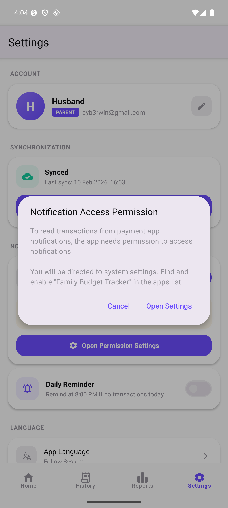
Kamu akan diarahkan ke halaman Settings HP → Notification Access. Cari "Family Budget Tracker" lalu aktifkan.
Notification Access adalah izin khusus yang memungkinkan aplikasi membaca isi notifikasi dari aplikasi lain (GoPay, OVO, BCA, dll). Tanpa izin ini, fitur auto-input tidak akan berfungsi.
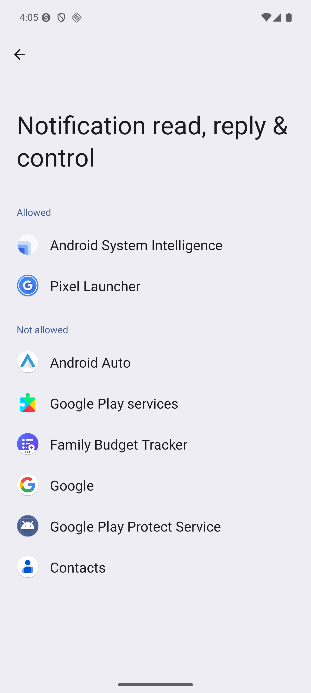
Setelah aktif, setiap kali kamu melakukan pembayaran dan muncul notifikasi, aplikasi akan:
• Otomatis tercatat — Jika notifikasi dikenali (format & nominal cocok), transaksi langsung masuk.
• Masuk ke Pending — Jika notifikasi tidak bisa di-parse otomatis, akan masuk ke daftar "Pending" untuk kamu review manual.
E-Wallet: GoPay, OVO, DANA, ShopeePay, LinkAja, Grab
Bank Umum: BCA mobile, myBCA, BRImo, BRI, BNI, Mandiri, CIMB Niaga, BTN, Permata, BSI, Maybank, OCBC, Danamon, Bank Mega
Digital Bank: Jenius, Bank Jago, SeaBank, Blu by BCA, LINE Bank, Allo Bank, Neobank, Digibank, TMRW
Transfer: Flip
Buka menu Pending Notifications (dari Home → ikon lonceng, atau Settings → Notifikasi Tertunda) untuk melihat notifikasi yang tertangkap.
Untuk setiap notifikasi pending, kamu bisa:
• Input Manual — Tap untuk mengisi kategori & detail, lalu simpan sebagai transaksi.
• Dismiss — Abaikan jika bukan transaksi (misal: notifikasi promo).
• Report — Laporkan jika notifikasi seharusnya bisa ter-parse otomatis tapi gagal.

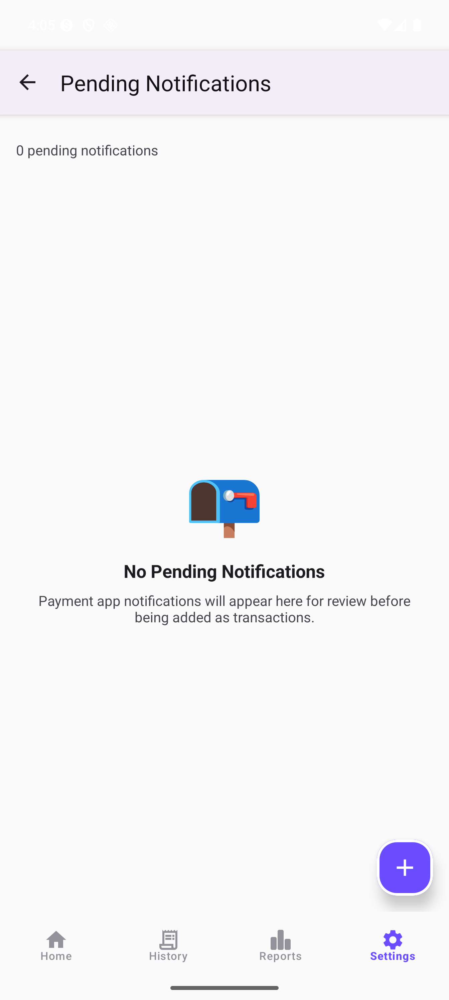
Riwayat & Laporan
Lihat semua riwayat transaksi dan analisis keuangan bulanan dalam bentuk grafik.
Tap "History" di bottom navigation untuk melihat semua transaksi. Transaksi ditampilkan per hari, dari yang terbaru.
Setiap item menampilkan: kategori, nominal, metode pembayaran, catatan, dan siapa yang mencatat.

History menampilkan transaksi di bulan yang sedang aktif (dipilih dari Home). Gunakan tombol filter dan search bar untuk mempersempit tampilan:
• Tipe — Hanya pengeluaran atau hanya pemasukan.
• Kategori — Tampilkan hanya kategori tertentu (misal: hanya Makanan).
• Metode Pembayaran — Filter berdasarkan cara bayar (misal: hanya GoPay).
• Anggota — Lihat transaksi anggota tertentu atau semua anggota.
• Rentang Nominal — Filter berdasarkan jumlah minimum/maksimum.
• Mata Uang — Pilih currency via chip di bagian atas (IDR, USD, dll).
• Search — Cari berdasarkan catatan atau nama kategori.
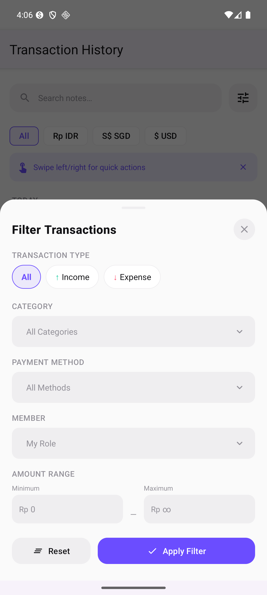
Tap "Reports" di bottom navigation untuk melihat laporan keuangan. Di sini kamu bisa melihat:
• Ringkasan — Total pemasukan vs pengeluaran bulan ini.
• Perbandingan — Dibanding bulan sebelumnya (naik/turun berapa persen).
• Budget vs Actual — Jika kamu sudah set budget, lihat apakah pengeluaran masih sesuai target.

Scroll ke bawah di halaman Reports untuk melihat pie chart breakdown per kategori. Di atas grafik ada toggle "Pengeluaran" dan "Pemasukan" — tap untuk beralih antara grafik pengeluaran atau pemasukan.
Grafik ini membantu kamu tahu kemana uang paling banyak keluar (atau dari mana uang paling banyak masuk).
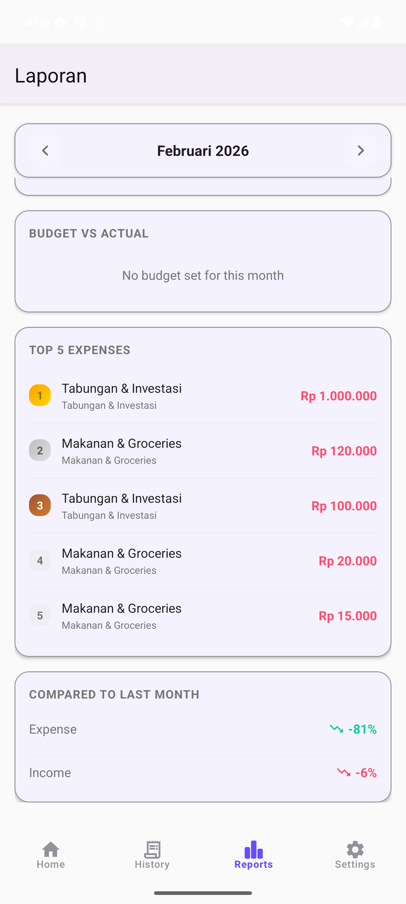
Di bawah pie chart, ada daftar 5 transaksi pengeluaran terbesar bulan ini. Setiap item menampilkan kategori, nominal, dan tanggal — membantu kamu mengidentifikasi pengeluaran yang paling signifikan.

Jika kamu sudah membuat transaksi rutin, bagian ini menampilkan ringkasan pengeluaran rutin bulanan: daftar setiap item recurring beserta nominalnya, total per bulan, dan persentase fixed cost terhadap total pengeluaran.
Ini berguna untuk melihat berapa besar porsi pengeluaran tetap (listrik, internet, sewa, dll) dibanding pengeluaran variabel.

Kelola Keluarga / Grup
Invite anggota keluarga atau teman untuk budget bersama, dan kelola siapa saja yang punya akses.
Buka Settings → Anggota Keluarga (atau Anggota Grup, tergantung tipe budget). Di sini kamu bisa melihat semua anggota beserta role dan status mereka.
Status anggota:
• Active — Sudah bergabung dan mengklaim role.
• Pending — Sudah diundang tapi belum membuka aplikasi.
Tap tombol "Invite" untuk mengundang anggota baru. Isi:
• Email — Email Google dari orang yang ingin diundang.
• Nama — Nama panggilan anggota (maks 20 karakter).
• Role (Tipe Keluarga) — Pilih Parent (akses penuh, bisa kelola anggota) atau Child (akses terbatas, hanya catat transaksi sendiri).
• Gender (khusus Child) — Pilih laki-laki (👦) atau perempuan (👧) untuk ikon avatar.
Setelah invite, spreadsheet akan otomatis di-share ke email tersebut. Orang yang diundang tinggal install app, login, dan pilih "Gabung Budget".

Jika ingin menghapus akses seseorang, tap anggota tersebut lalu pilih "Revoke". Akses ke spreadsheet akan dicabut dan anggota tersebut tidak bisa lagi melihat atau mengedit data budget.
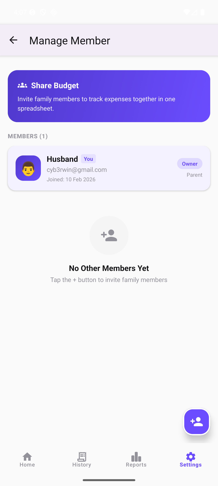
Atur Budget
Set target pengeluaran bulanan per kategori agar keuangan lebih terkontrol.
Buka Settings → Atur Budget. Kamu akan melihat daftar semua kategori pengeluaran beserta budget yang sudah di-set (jika ada).
Kategori yang belum punya budget akan menampilkan "Belum diatur".

Tap kategori yang ingin diatur, lalu masukkan nominal budget bulanan. Misalnya: Makanan = Rp 2.000.000, Transportasi = Rp 500.000.
Budget berlaku per bulan dan akan di-reset otomatis setiap awal bulan.
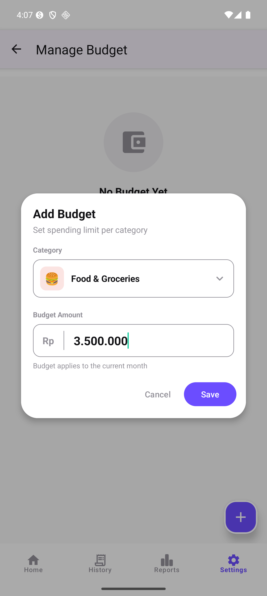
Setelah budget di-set, kamu bisa memantau progress di Reports. Setiap kategori akan menunjukkan:
• Progress bar — Seberapa banyak budget yang sudah terpakai.
• Warna indikator — Hijau (aman), kuning (mendekati limit), merah (melebihi budget).
• Sisa budget — Berapa lagi yang boleh dikeluarkan bulan ini.
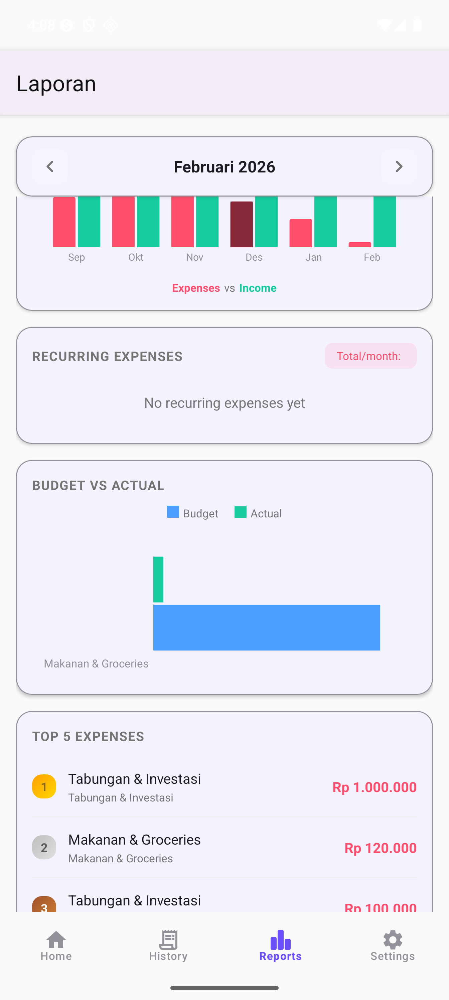
Target Tabungan
Buat target menabung dan pantau progressnya hingga tercapai.
Buka Settings → Target Tabungan. Di sini kamu bisa melihat semua target tabungan yang sedang berjalan dan yang sudah tercapai.

Tap tombol (+) untuk membuat target baru. Isi:
• Nama — Nama target (misal: "Dana Darurat", "Liburan Bali").
• Target Nominal — Berapa total yang ingin ditabung.
• Mata Uang — Pilih currency (IDR, USD, SGD, dll).
• Target Tanggal — Kapan ingin tercapai (opsional).
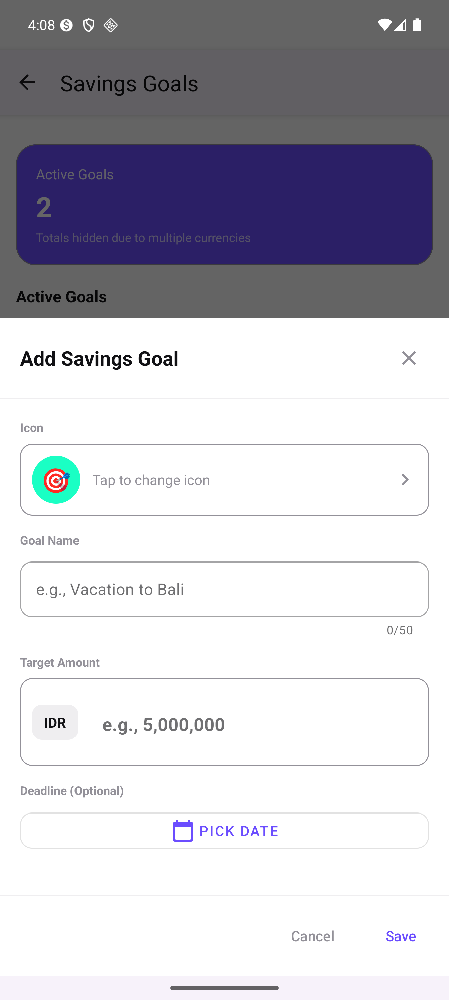
Setiap target menampilkan progress bar dan persentase pencapaian. Kamu bisa menambah saldo tabungan kapan saja.
Saat target tercapai 100%, kamu bisa menandainya sebagai "Complete" dan merayakan pencapaianmu!
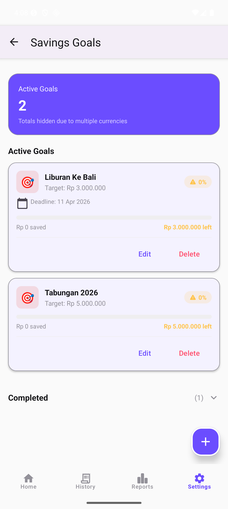
E-Wallet
Lacak saldo e-wallet (GoPay, OVO, ShopeePay, DANA) dan otomatis kurangi saldo saat transaksi. Top up bukan pengeluaran!
Buka Settings → E-Wallet, lalu tap tombol (+) untuk menambah wallet baru.
Isi nama (misal: "GoPay"), pilih ikon, dan masukkan saldo awal.
Opsional: Link ke Payment Method — Hubungkan wallet ke metode pembayaran yang sudah ada. Saldo akan otomatis berkurang saat kamu menggunakan metode pembayaran tersebut untuk transaksi.
Tap tombol "Top Up" untuk menambah saldo wallet (misal: setelah transfer dari rekening bank ke GoPay).
Tap tombol "Tarik" untuk mengurangi saldo wallet (misal: tarik saldo GoPay ke rekening bank).
Jika wallet sudah di-link ke payment method, saldo otomatis berubah saat transaksi:
• Pengeluaran — Saldo wallet berkurang sesuai nominal transaksi.
• Pemasukan — Saldo wallet bertambah sesuai nominal transaksi.
• Hapus Transaksi — Saldo wallet dikembalikan (reverse).
Ini berlaku untuk transaksi manual maupun auto-input dari notifikasi.
Gamification
Budgeting jadi lebih seru! Raih achievements, kumpulkan XP, naik level, dan bersaing di leaderboard keluarga.
Buka Home → ikon piala untuk melihat halaman Achievements. Ada 29 achievement yang bisa kamu raih di 7 kategori:
• Tracker — Rajin mencatat transaksi (misal: catat 10, 50, 100 transaksi).
• Streak — Input berturut-turut setiap hari.
• Budget — Berhasil tidak melebihi budget.
• Savings — Menabung dan mencapai target.
• Automation — Memanfaatkan fitur auto-input.
• Debt — Melunasi hutang.
• Special — Achievement tersembunyi dan unik.

Setiap aktivitas yang kamu lakukan memberikan XP (Experience Points):
• Catat transaksi = XP.
• Raih achievement = bonus XP besar.
• Streak harian = XP multiplier.
Semakin banyak XP, semakin tinggi level kamu. Level dan streak ditampilkan di Home sebagai badge.
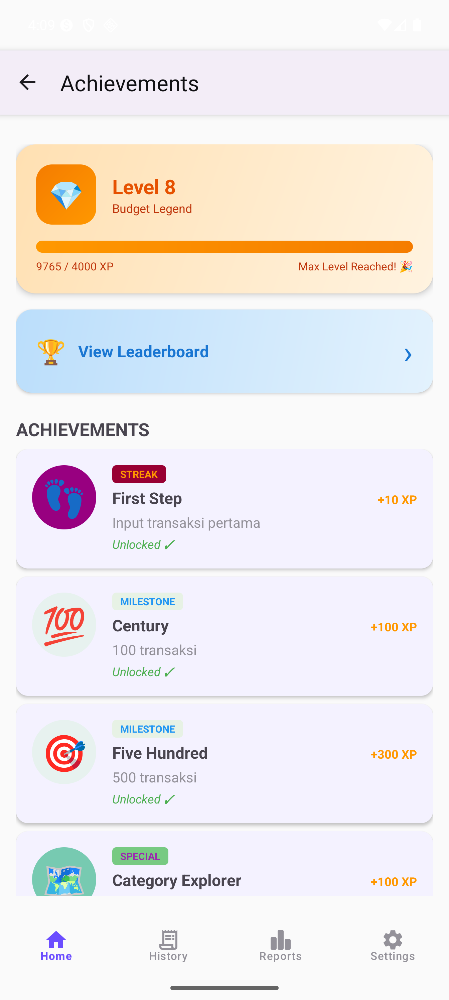

Di tab Leaderboard (dari halaman Achievements), kamu bisa melihat peringkat semua anggota keluarga/grup berdasarkan XP dan level.
Siapa yang paling rajin mencatat? Siapa yang punya streak terpanjang? Kompetisi sehat untuk memotivasi seluruh anggota!
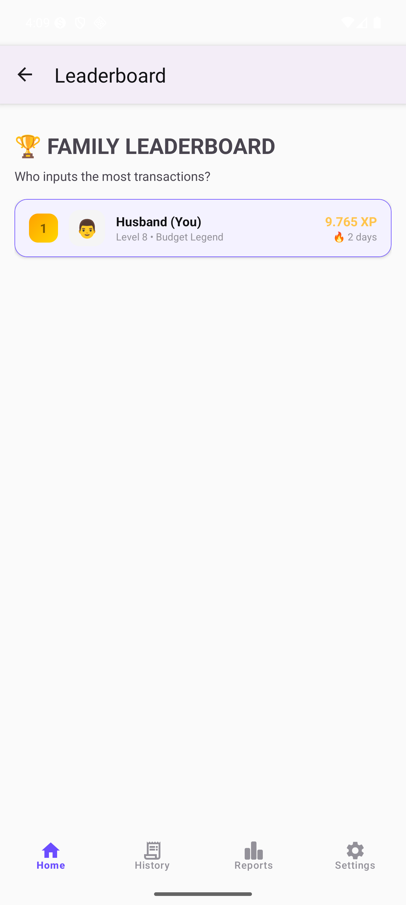
Settings & Lainnya
Pengaturan sync, bahasa, transaksi rutin, export data, dan fitur tambahan lainnya.
Tap "Settings" di bottom navigation. Dari sini kamu bisa mengakses semua pengaturan aplikasi.

Data kamu tersimpan lokal di HP dan di-sync ke Google Sheets. Sync terjadi otomatis saat kamu membuka app atau menambah transaksi.
Jika ingin sync manual, tap tombol "Sync" di Settings. Ada cooldown 5 menit antar sync manual untuk mencegah overload.
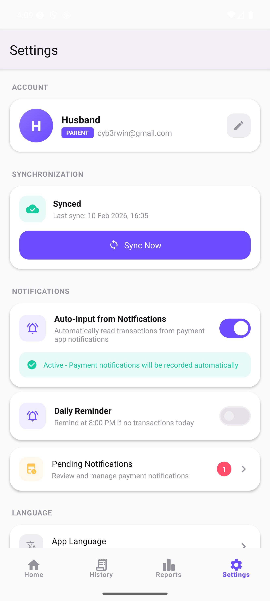
Aktifkan toggle "Pengingat Harian" di Settings agar aplikasi mengirim notifikasi setiap jam 20:00 jika kamu belum mencatat transaksi hari ini.
Fitur ini membantu menjaga streak harian dan memastikan tidak ada pengeluaran yang terlewat dicatat.

Aplikasi mendukung Bahasa Indonesia dan English. Untuk mengganti bahasa, tap Settings → Bahasa lalu pilih bahasa yang diinginkan. Aplikasi akan langsung berubah tanpa restart.
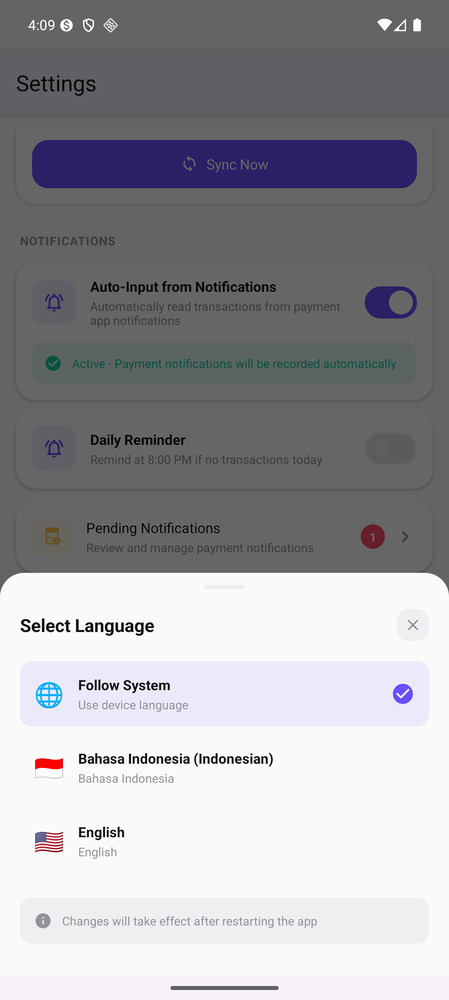
Tap Settings → Tema untuk mengganti tampilan aplikasi. Ada 3 pilihan:
• Terang (Light) — Tampilan cerah dengan latar putih.
• Gelap (Dark) — Tampilan gelap, nyaman di malam hari dan hemat baterai di layar AMOLED.
• Sistem (System) — Otomatis mengikuti pengaturan tema HP kamu (default).

Buka Settings → Kelola Kategori untuk menambah, mengedit, atau menghapus kategori dan sub-kategori pengeluaran/pemasukan. Setiap kategori bisa diberi emoji dan warna custom.
Untuk metode pembayaran, buka Settings → Metode Pembayaran. Kamu bisa menambah metode baru (misal: kartu kredit tertentu) atau menghapus yang tidak dipakai.

Daftar Lengkap Kategori & Sub-Kategori
Berikut daftar lengkap semua kategori dan sub-kategori bawaan. Kamu bisa menambah, mengedit, atau menghapus sesuai kebutuhan.
Punya tagihan bulanan yang tetap? (Listrik, Internet, Sewa, dll.) Buka Settings → Transaksi Rutin untuk membuat transaksi yang otomatis tercatat setiap bulan.
Isi nominal, kategori, dan jadwal pengulangan. Transaksi akan otomatis dibuat sesuai jadwal.
Saat membuat transaksi rutin, isi: nama (misal: "Listrik PLN"), tipe (pengeluaran/pemasukan), kategori, nominal, metode pembayaran, dan tanggal jatuh tempo (tanggal 1-31 setiap bulan).
Pilih salah satu mode:
• Otomatis (Auto) — Transaksi langsung tercatat di tanggal yang ditentukan tanpa konfirmasi. Cocok untuk tagihan yang nominalnya tetap.
• Pengingat (Reminder) — Aplikasi mengirim notifikasi di tanggal jatuh tempo. Kamu bisa konfirmasi untuk mencatat atau tunda. Cocok untuk tagihan yang nominalnya bisa berubah.
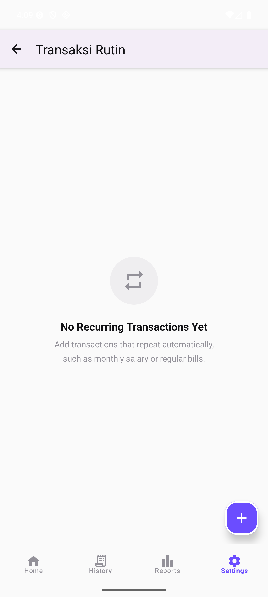

Ingin backup atau analisis data di luar aplikasi? Buka Settings → Export. Kamu bisa export data transaksi dalam format yang bisa dibuka di spreadsheet.
Pilih rentang waktu dan filter role jika ingin export data anggota tertentu saja.
File yang dihasilkan berformat CSV dengan 9 kolom: Tanggal, Tipe, Kategori, SubKategori, Jumlah, Mata Uang, MetodeBayar, Catatan, dan Dicatat Oleh. File bisa langsung dibuka di Excel, Google Sheets, atau aplikasi spreadsheet lainnya.
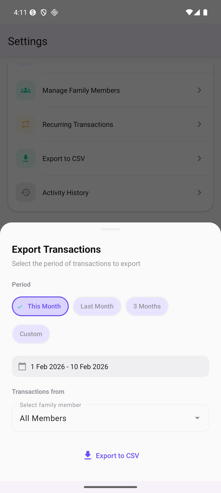
Buka Settings → Tentang untuk melihat versi aplikasi, kebijakan privasi, dan mengirim feedback.
Jika menemukan bug atau punya saran fitur, tap "Kirim Feedback" untuk langsung melaporkan ke developer.